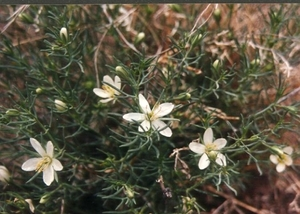
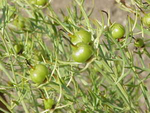
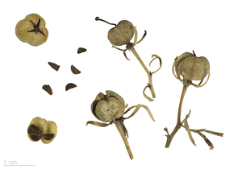

ⲙⲧⲟⲧϥ B, ϥⲧⲱⲧϥ S (prob l ⲙⲧ.) nn m, wild rue: K 195 ⲡⲓⲙ. سداب بري, P 44 83 S ⲁⲃⲣⲁⲇⲁⲛⲟⲩ (ἀβρότονον) · ⲁⲅⲣⲓⲟⲡⲓⲥⲧⲁⲛⲛⲟⲩ (? l -ⲡⲏⲅⲁⲛⲟⲛ) ⲃⲁϣⲟⲩϣ ϩⲟⲟⲩⲧ · ϥ. ﺳﹶ ﺑﹶ = 43 59 S ⲉⲃⲧⲟⲧϥ فليا (cf فلية penny-royal, Dozy). Cf ⲃⲁϣⲟⲩϣ.



ⲉⲃⲧⲟⲧϥ v ϥⲧⲱⲧϥ.
ⲙⲧⲟⲧϥ B, ϥⲧⲱⲧϥ S (prob l ⲙⲧ.) nn m, wild rue: K 195 ⲡⲓⲙ. سداب بري, P 44 83 S ⲁⲃⲣⲁⲇⲁⲛⲟⲩ (ἀβρότονον) · ⲁⲅⲣⲓⲟⲡⲓⲥⲧⲁⲛⲛⲟⲩ (? l -ⲡⲏⲅⲁⲛⲟⲛ) ⲃⲁϣⲟⲩϣ ϩⲟⲟⲩⲧ · ϥ. ﺳﹶ ﺑﹶ = 43 59 S ⲉⲃⲧⲟⲧϥ فليا (cf فلية penny-royal, Dozy). Cf ⲃⲁϣⲟⲩϣ.
ϥⲧⲱⲧϥ v ⲙⲧⲟⲧϥ.
| view | ⲃⲁϣⲟⲩϣ SB | (noun masculine) rue [πηγανον]617 |